Survival-guided matrix factorization identifies generalizable prognostic programs in pancreatic cancer
PhD Dissertation Defense
Department of Biostatistics · UNC Gillings School of Global Public HealthAdvisor: Naim RashidCommittee: {{COMMITTEE MEMBERS}}
2026-06-26
Bulk RNA collapses a cell mixture into one expression vector

NMF factors the mixture into interpretable gene programs

Reconstruction ≠ prognosis

DeSurv couples NMF reconstruction with a Cox survival objective

The survival gradient updates the programs (W), not the loadings (H)

Bayesian optimization tunes the model by cross-validated C-index

Survival supervision should recover prognostic programs more reliably
Two tests:
- Ground-truth recovery in simulation
- Out-of-sample generalization to 5 cohorts
Simulation gives a known prognostic program to recover

DeSurv recovers the true prognostic program and rank

Training and validation cohorts are held fully apart
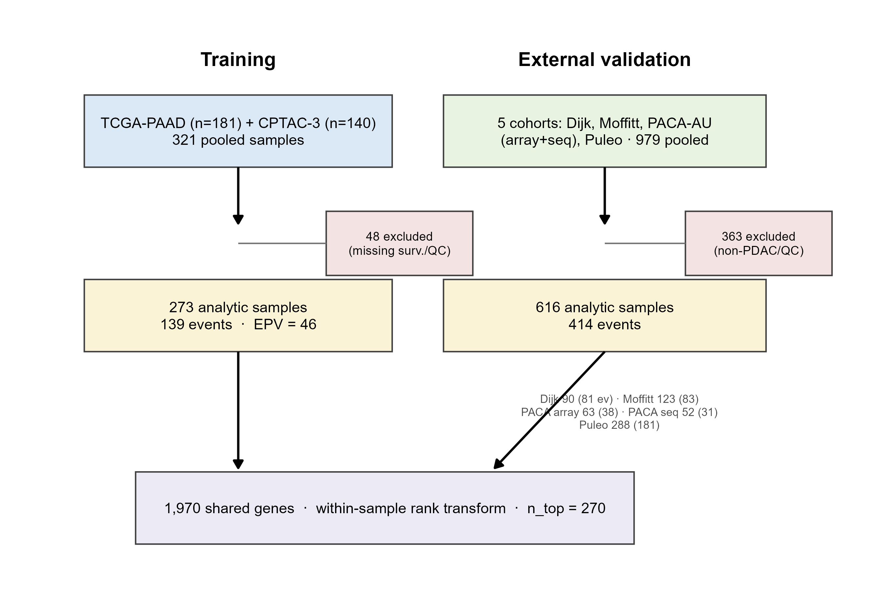
DeSurv concentrates survival signal into one factor

Supervision reorganizes PDAC factors around prognosis
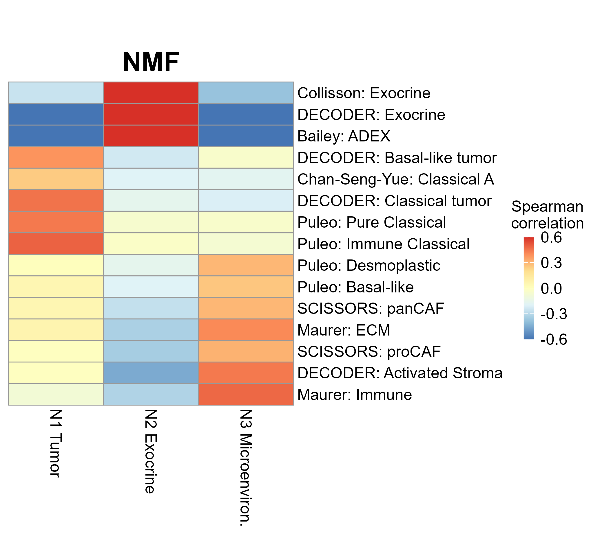
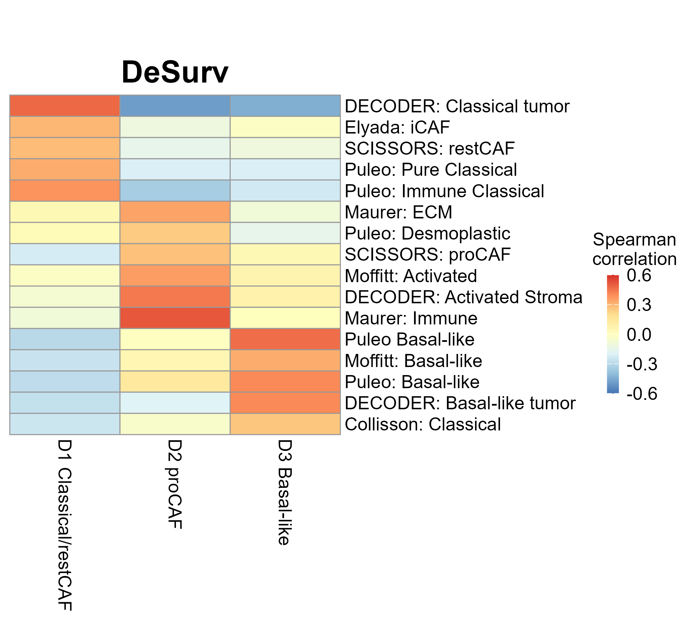
D1 stays prognostic across five independent cohorts
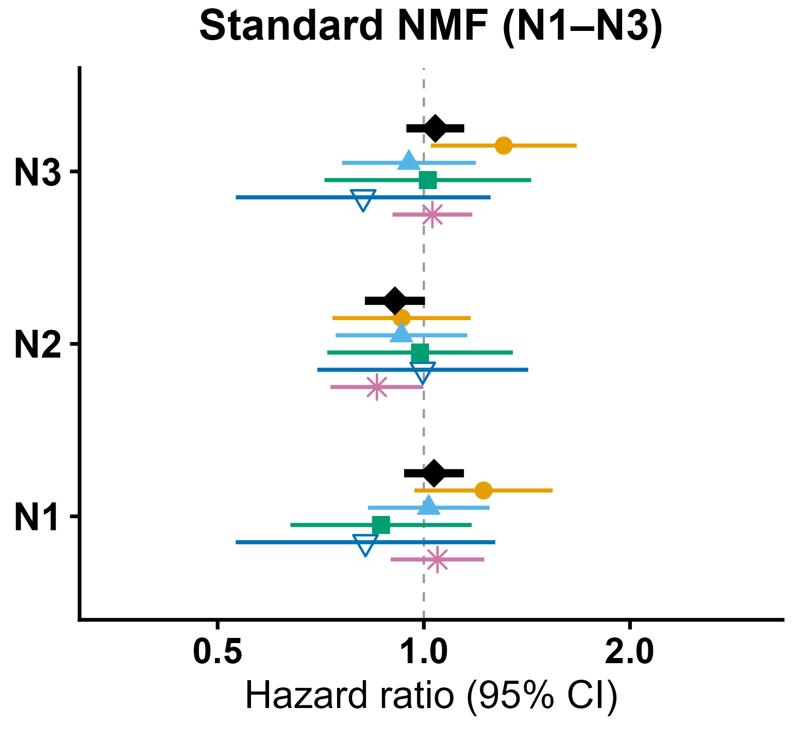
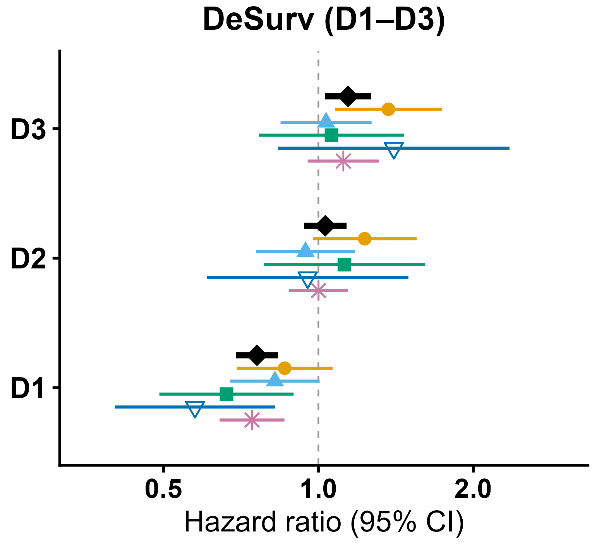
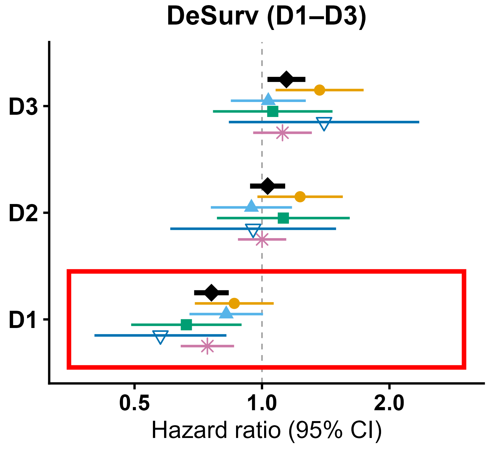
DeSurv stratifies clinical risk better than matched-rank NMF
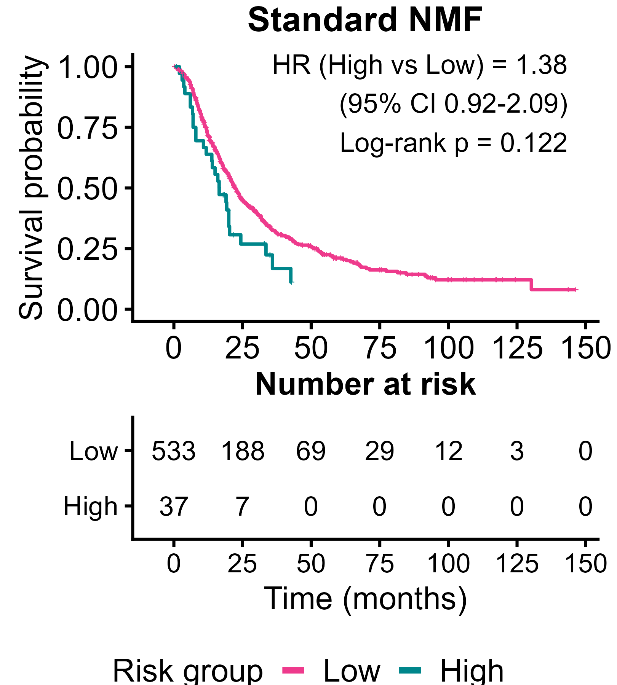
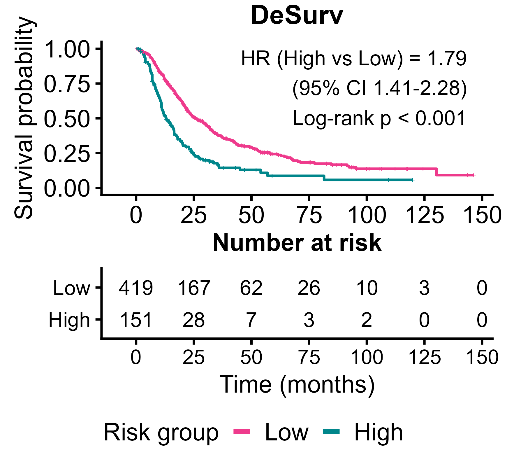
Prognosis in PDAC is tumor–stroma coupling, not tumor alone
DeSurv’s prognostic axis D1 fuses Classical tumor with restraining-CAF stroma into a single factor — a tumor–stroma coupling, recovered de novo with no pre-specified signatures.
What D1 captures
- Classical (well-differentiated) tumor program
- restCAF stromal program in the same factor
- High D1 → favorable outcome (pooled HR ≈ 0.76)
Why it matters
- Prognosis is not purely tumor-intrinsic
- Consistent with DeCAF and single-cell CAF biology
- Unsupervised NMF splits this signal and misses the coupling
DeSurv helps when prognosis hides in low-variance programs
Where the gain is largest
- Prognostic programs explaining modest variance — easily missed unsupervised
- Low-abundance stromal / CAF signals diluted in bulk tissue
Where it doesn’t
- Null signal (β = 0): BO drives α → 0, DeSurv collapses to NMF
- No hallucinated structure; not a competing classifier
The data decide. Supervision bends the factorization toward prognosis only when prognostic signal is actually present — otherwise you recover ordinary NMF.
Limitations point to neoadjuvant and single-cell extensions
Limitations
- Cox proportional-hazards assumption
- Demonstrated in PDAC only, treatment-naive cohorts
- Bayesian-optimization cost grows at scale
Future work
- Extend to neoadjuvant / treated cohorts
- Bridge to single-cell-annotated data to sharpen programs
- Apply the framework beyond PDAC
Survival supervision yields transportable prognostic programs
A survival-supervised gradient on W, with joint Bayesian-optimization tuning and 1-SE model selection, turns bulk transcriptomes into prognostic programs that transport to new cohorts by simple projection. Released as an open-source R package.
Take-home
- Reconstruction ≠ prognosis — supervision recovers the prognostic basis that unsupervised NMF misses
- Validated two non-circular ways: ground-truth recovery in simulation and out-of-sample generalization across 5 cohorts
- The prognostic axis in PDAC is a tumor–stroma coupling (D1), found de novo
Thank you
Advisor & committee
Naim Rashid (advisor)
{{COMMITTEE MEMBERS}}
Collaborators
Jen Jen Yeh · Naim Rashid lab
Yurovsky · Peng · Li
Data & funding
TCGA, CPTAC, and the 5 validation cohorts
DOD HT9425241103100121
Questions welcome.
Backup slides
Backup · The full DeSurv objective
\[\mathcal{L}(W,H,\beta) = (1-\alpha)\underbrace{\Big[\tfrac{1}{2np}\lVert X-WH\rVert_F^2 + \tfrac{\lambda_H}{2nk}\lVert H\rVert_F^2\Big]}_{\text{reconstruction}} \;-\; \alpha\underbrace{\Big[\tfrac{2}{n_e}\,\ell(W,\beta) - \lambda\big(\xi\lVert\beta\rVert_1 + \tfrac{1-\xi}{2}\lVert\beta\rVert_2^2\big)\Big]}_{\text{Cox survival}}\]
- Cox model runs on factor scores \(Z = W^\top X\); \(\ell\) is the Cox log-partial likelihood
- \(\alpha \in [0,1)\) balances the two losses — \(\alpha = 0\) recovers standard NMF
- \(\lambda_H,\lambda \ge 0\) regularize \(H\) and \(\beta\); \(\xi \in [0,1]\) sets the elastic-net mix
Backup · Block-coordinate descent updates
Cycle three blocks to a stationary point (SI Algorithm S1):
- H — multiplicative, convex QP, nonincreasing: \[H \leftarrow \max\!\Big(H \odot \frac{W^\top X}{W^\top W H + \lambda_H H + \varepsilon},\ \varepsilon\Big)\]
- W — hybrid multiplicative with gradient-balancing factor \(\zeta\) (clipped), backtracking line search, then column normalization (preserves \(WH\) and \(W\beta\))
- β — elastic-net Coxnet, cyclic coordinate descent (closed-form soft-thresholding)
Backup · Convergence to a stationary point
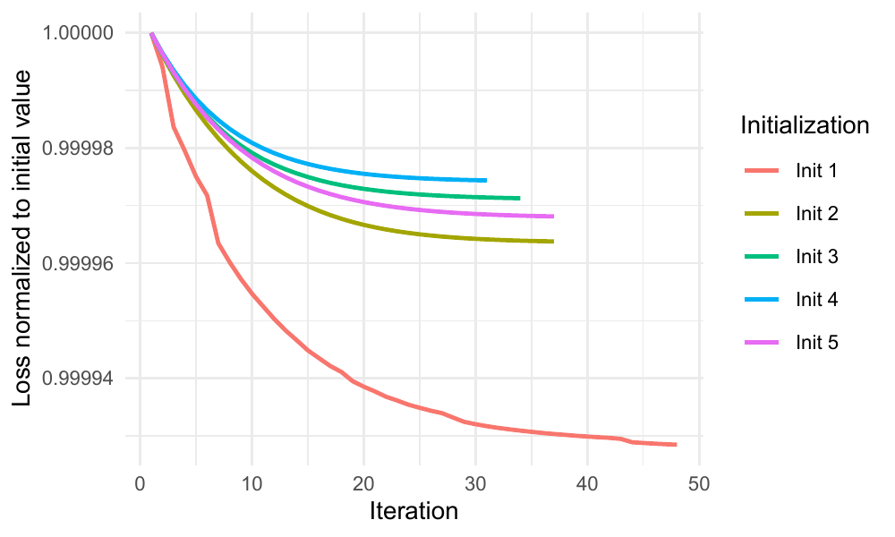
- Objective is monotone nonincreasing → finite limit; every limit point is a stationary (KKT) point (SI Thm 1)
- 5 multistart trajectories converge within ~5,000 iterations
- Caveat: the Coxnet β-step uses an approximate Hessian — proof is for an idealized update, empirically stable
Backup · Why supervision enters W, not H
- NMF is non-identifiable: \((W,H)\to(WR,R^{-1}H)\) preserves reconstruction
- Supervising H could lower Cox loss by reshuffling loadings while leaving programs \(W\) ~unchanged
- Supervising W makes programs gene-level → new samples embed by projection \(Z_{\text{new}} = X_{\text{new}}^\top \tilde W\)
Backup · Hyperparameters via Bayesian optimization
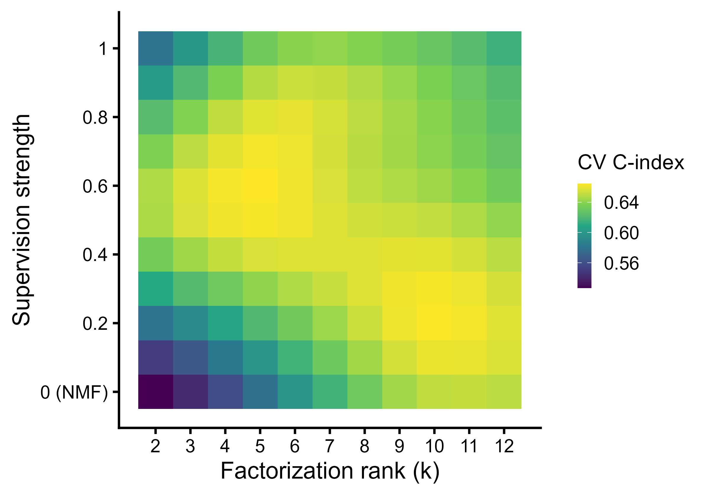
- GP surrogate (Matérn + ARD), Expected-Improvement acquisition over \(k,\alpha,\lambda,\xi,n_{\text{top}}\)
- Objective = nested-CV mean C-index (Algorithm S2); no validation survival used
- Final \(k\) by the 1-SE rule → \(k=3\); C-index plateau spans \(k=3\)–\(12\)
Backup · Null and mixed simulation scenarios
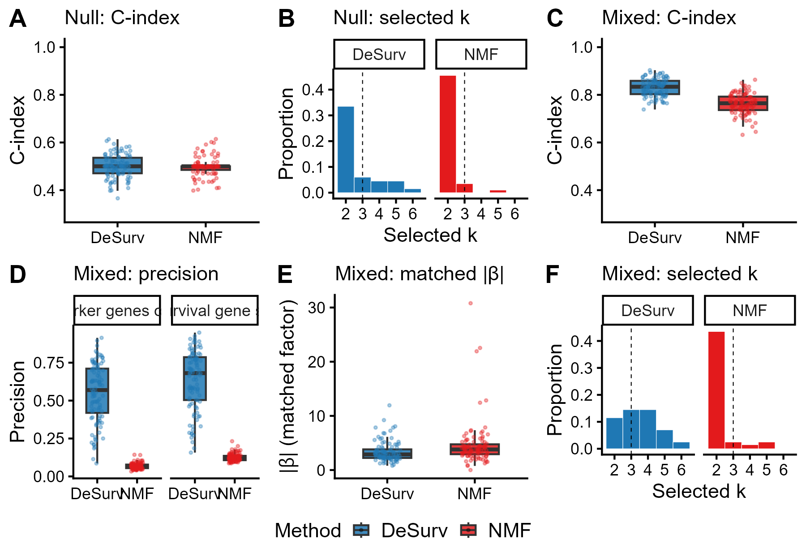
- Null (\(\beta=0\)): both methods C-index ≈ 0.5; BO drives \(\alpha\to0\) — DeSurv does not hallucinate structure
- Mixed (survival on markers + background): marker-only precision strongly favors DeSurv; matched factor gets larger \(|\beta|\)
- Dose–response: advantage greatest (primary) → moderate (mixed) → absent (null)
Backup · NMF rank-selection heuristics disagree
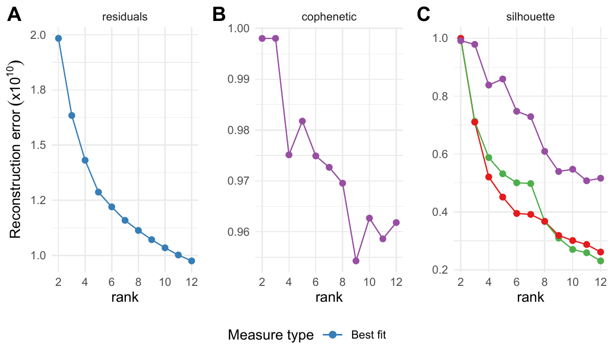
- Reconstruction residuals decrease smoothly — no elbow
- Cophenetic correlation fluctuates — no clear transition
- Silhouette favors very low \(k\)
- The three criteria disagree → motivates survival-supervised selection
Backup · C-index across factorization rank
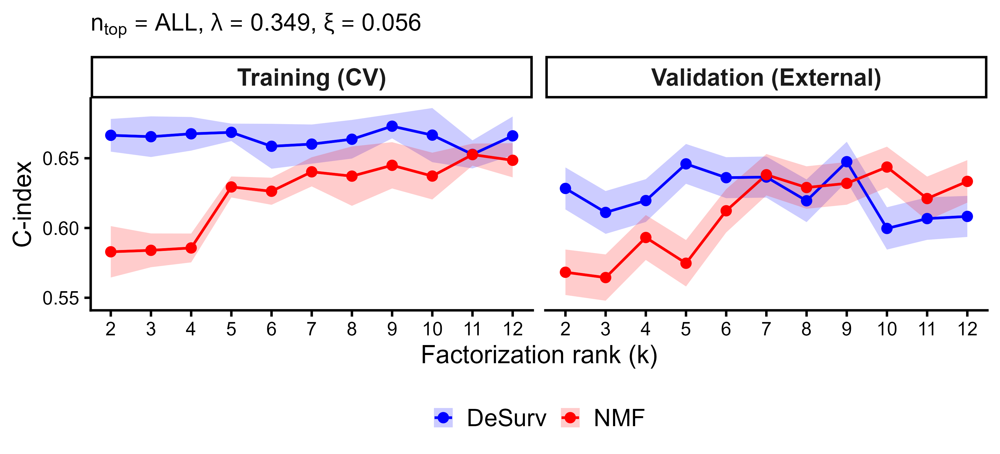
- Shown: \(n_{\text{top}}=\text{ALL}\); \(\lambda=0.349\), \(\xi=0.056\) (\(\alpha\) selected per \(k\))
- DeSurv > NMF at nearly every \(k\) in training
- DeSurv \(k=3\) ≈ NMF \(k=7\) in validation → fewer factors carry the prognostic signal
Backup · NMF at its own ranks (k = 5, 7)
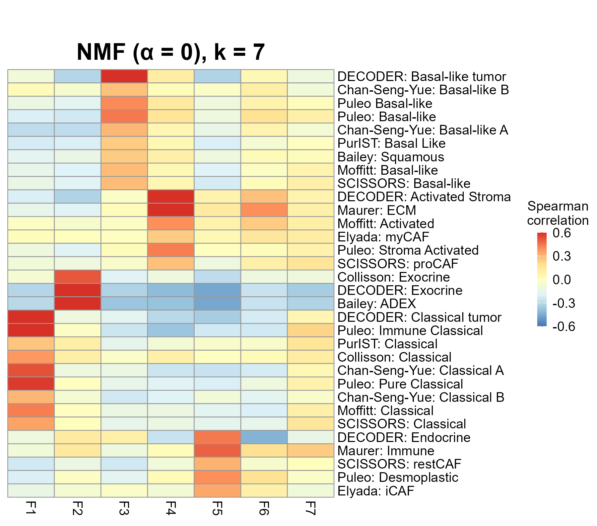
- Elbow → \(k=5\); BO with \(\alpha=0\) → \(k=7\)
- \(k=5\): re-derives the \(k=3\) core + Exocrine-like and restCAF variance factors (no new prognostic content)
- \(k=7\): more fragmentation, no new coherent program — matches DeSurv C-index but needs >2× factors
Backup · Log-rank cutpoint selection
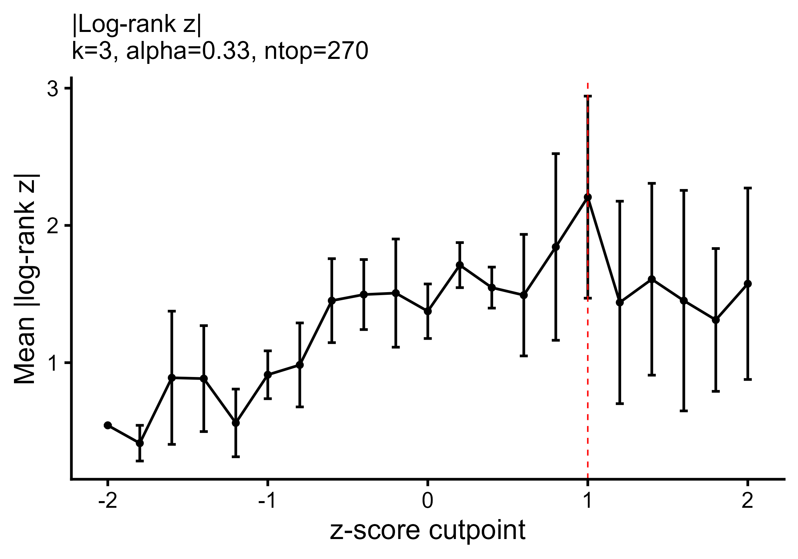
- Cutpoint chosen by CV on TCGA+CPTAC: grid \(z\in\{-2,\dots,2\}\), maximize mean \(|\text{log-rank }z|\) (dashed = selected \(z\))
- Applied to validation by standardizing with training mean/SD
- Yields consistent high-risk separation across all five external cohorts (Dijk, Moffitt, PACA-AU array+seq, Puleo)
Backup · Risk-group subtype composition
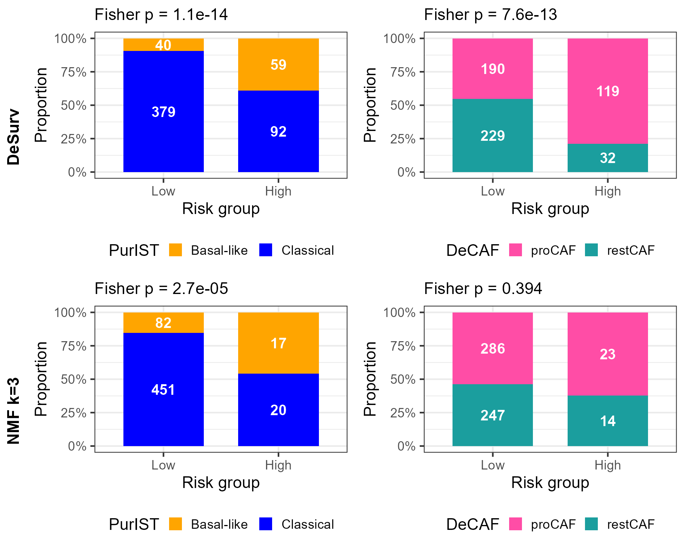
- DeSurv high-risk group enriched for both Basal-like (PurIST) and proCAF (DeCAF)
- NMF \(k=3\) group: Basal-like enrichment but no significant proCAF — misses the tumor–stroma coupling
- Adjusted for PurIST + DeCAF, DeSurv LP retains HR = 1.33 (95% CI 1.13–1.56, \(P<0.001\))
Backup · Variance and survival contribution metrics
- Reconstruction Shapley share — per-factor contribution to the model’s reconstruction; partitions and sums to 100% (main-text Fig 3C x-axis)
- Conditional variance (semi-partial \(R^2\)): \(\;V_j = (\mathrm{RSS}_{-j} - \mathrm{RSS}_{\text{full}})/\lVert X\rVert_F^2\)
- Survival contribution (Type III): \(\;\Delta\ell_j = \ell(\text{full}) - \ell(\text{drop factor } j)\) at the MPLE
- Factor specificity of top genes: \(\;s_{ij} = W^*_{ij} - \max_{j'\neq j} W^*_{ij'}\), with \(W^*\) column-max scaled
Backup · Factor gene lists (top of each program)
270 genes per factor (BO-selected \(n_{\text{top}}\)); top entries by contrast score:
D1 · Classical + restCAF
DMBT1, IGFBP2, S100A4, KRT23, LIF, IFI6, PDLIM3, CLDN18 …
D2 · proCAF
UHMK1, DDR2, INHBA, DYNC2H1, ZDHHC20, ITPR2, HMCN1, LAMA2 …
D3 · Basal-like + proliferation
HSPB1, KRT7, MSLN, RPSAP58, S100P, RPS16, IL32, SH3BGRL3 …
Survival-guided matrix factorization · DeSurv